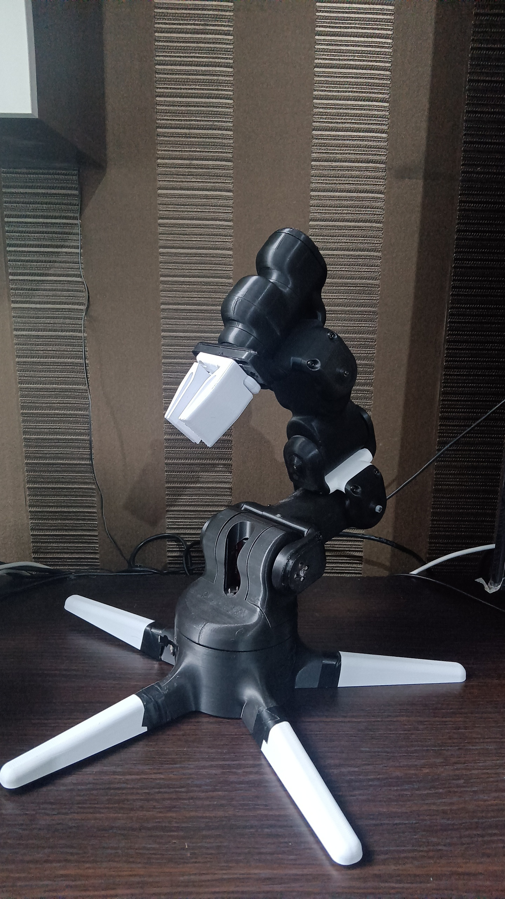

← All projects
Robotics
6-DOF Robotic Arm (Version 1)
A six degrees of freedom arm designed to mimic the kinematics of a human arm.

- Category
- Robotics
- Year
- Add year
- Skills used
- Kinematics
- CAD
- Prototyping
- Full write-up
- Open write-up
Situation
This 6 degrees of freedom (DOF) robotic arm is designed to mimic the kinematics of a human arm, allowing it to reach points within its workspace.
How the arm works
Explain the six joints, what drives each one, and how the controller moves them. Add a labelled diagram if you have one.
Design and build
Describe the parts you designed, the materials, how you made them and any problems you solved.
Results
What can the arm do? Add measurements such as reach, payload or accuracy if you tested them.
What I learned and Version 2
What worked, what failed and what you would change in the next version.
Gallery